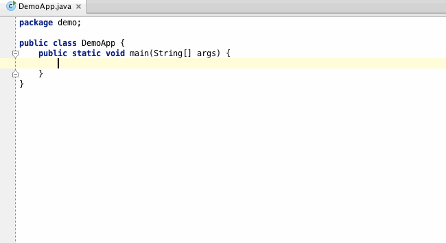
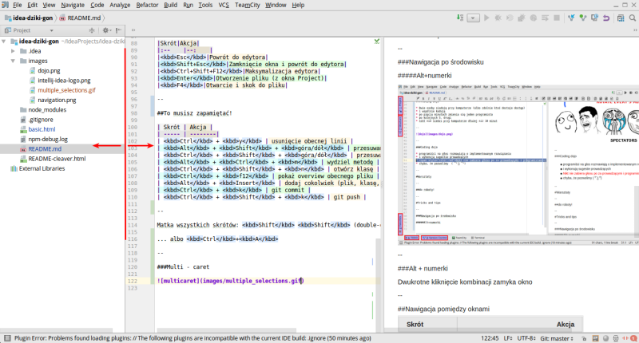
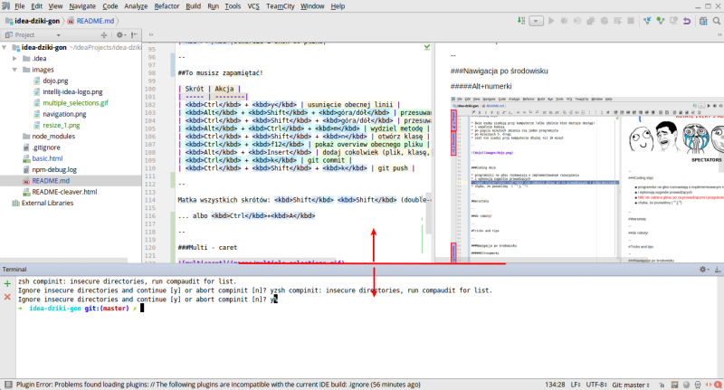
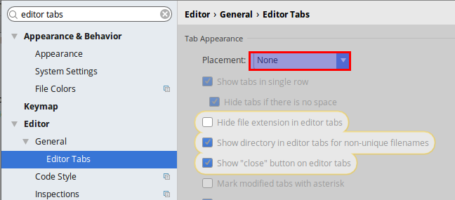
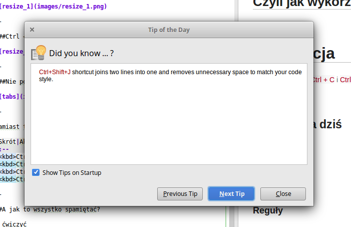
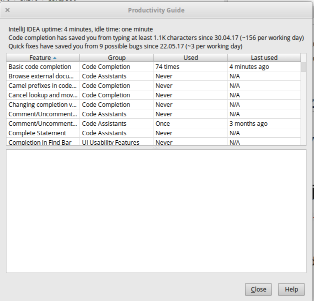
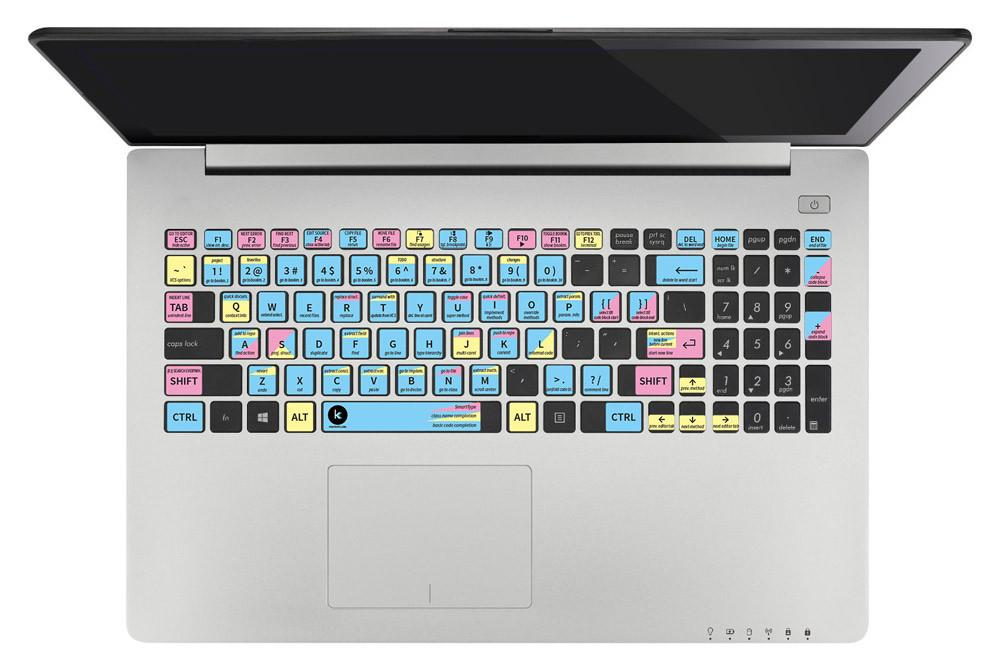

Kto nie używa Ctrl + C i Ctrl + V do kopiowania?
Kto nie używa Del do usuwania?

Dwukrotne kliknięcie kombinacji zamyka okno
| Skrót | Akcja |
|---|---|
| Esc | Powrót do edytora |
| Shift+Esc | Zamknięcie okna i powrót do edytora |
| Ctrl+Shift+F12 | Maksymalizacja edytora |
| Enter | Otworzenie pliku (z okna Project) |
| F4 | Otwarcie i skok do pliku |
| Skrót | Akcja |
|---|---|
| Ctrl + y | usunięcie obecnej linii |
| Alt + Shift + ↑ | przesuwanie linii kodu góra/dół |
| Ctrl + Shift + ↑ | przesuwanie metody / bloku kodu |
| Alt + Ctrl + m | wydziel metodę |
| Ctrl + Shift + n | otwórz plik |
| Ctrl + f12 | overview obecnego pliku |
| Alt + Insert | dodaj (plik, klasę, metodę, test…) |
| Alt + Shift + f10 | run |
| Alt + 9 | git log |
| Ctrl + k | git commit |
| Ctrl + Shift + k | git push |




Zamiast tego użyj skrótu:
| Skrót | Akcja |
|---|---|
| Ctrl+E | Ostatnie pliki |
| Ctrl+Shift+Tab | Okna |
| Ctrl+Tab | Skok do ostatniego pliku |
| Ctrl+Shift+E | Skok do ostatnio edytowanego pliku |

Help -> Productivity Guide

